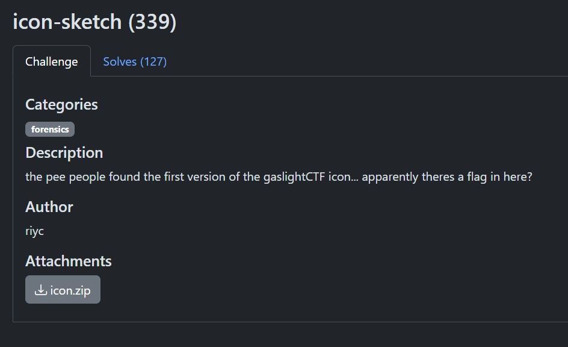
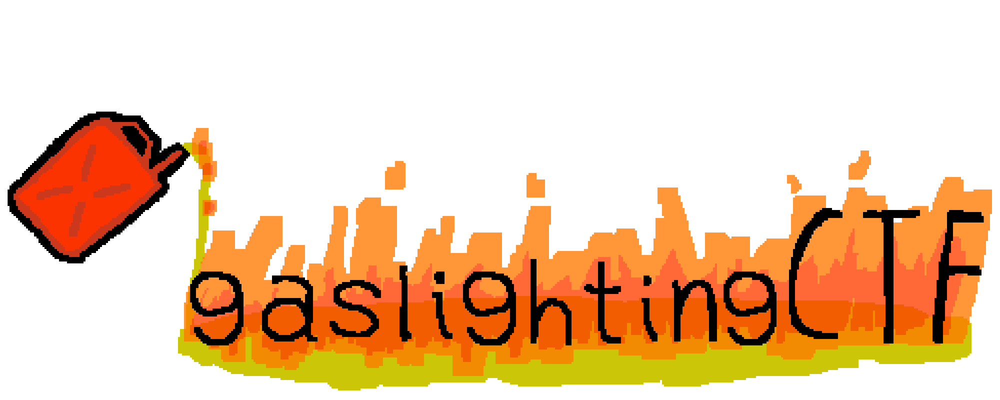
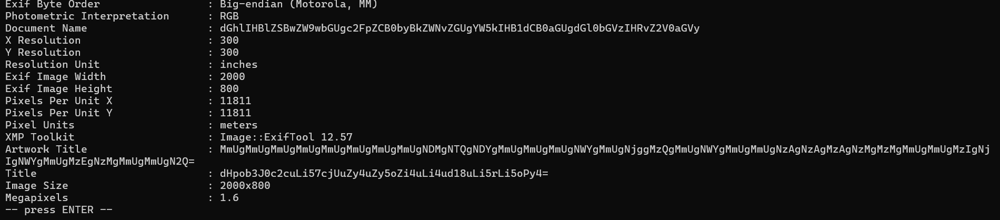
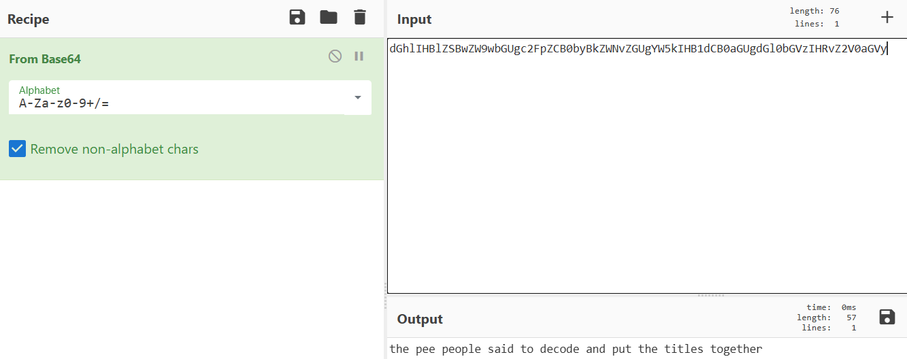
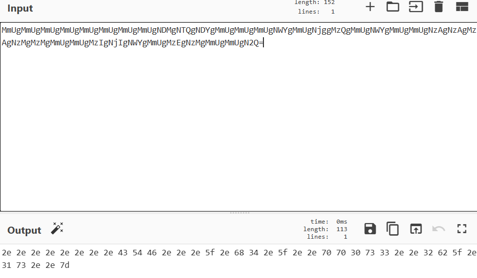
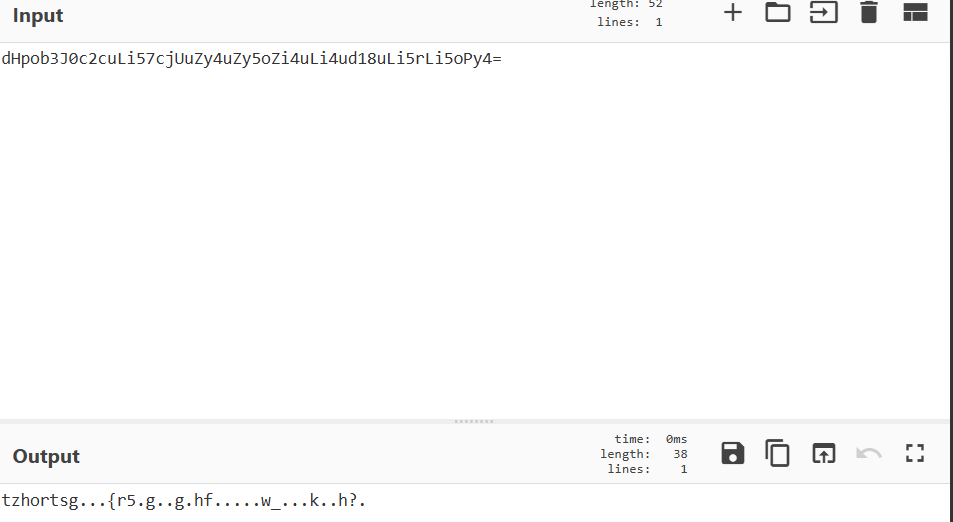
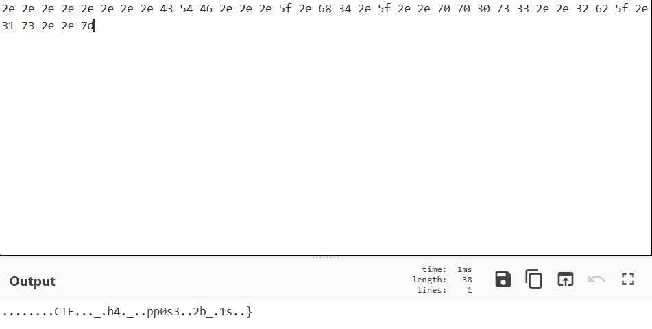

Challenge Overview
Hello there! Today, I'm going to walk you through solving the Icon Sketch challenge from GaslightCTF.
The challenge initially presents an ordinary PNG icon. The objective is to investigate the file and uncover the hidden information contained within it.

Initial Inspection
I started by exploring the provided icon. It was a
.png image representing the competition,
and at first glance it did not contain any visible flag
or anything obviously suspicious.

Sometimes the most interesting information is not visible in the image itself.
Metadata Analysis
I decided to inspect the metadata of the image using
exiftool.
This was where things became interesting. Several metadata fields contained values that appeared to be encoded using Base64.

Decoding the Metadata
The Document Name, Artwork Title, and Title fields contained Base64-formatted values.
I decoded all of them using CyberChef.

After decoding the values, it became clear that the results were related and that the different pieces needed to be combined to recover the hidden information.
Analyzing the Decoded Values
The decoded values provided additional clues. I examined each result individually and compared the outputs to determine how they were connected.


HEX Decoding
One of the decoded values immediately looked like hexadecimal data.
I converted it to plain text to see whether it contained a portion of the flag.

........CTF..._.h4._..pp0s3..2b_.1s..}
Identifying the Cipher
The other decoded value was:
tzhortsg...{r5.g..g.hf.....w_...k..h?.At this point, I knew the expected flag format was:
gaslightCTF{...}
This gave me a useful clue. I compared the known
gaslight prefix with the corresponding encoded
characters.
After investigating the transformation, I identified it as a monoalphabetic substitution cipher.
Applying the substitution to the encoded value produced another partial flag:
gaslight...{i5.t..t.su.....d_...p..s?.Combining the Clues
At this point, I had two partial values extracted from the different metadata clues.
The first recovered fragment was:
........CTF..._.h4._..pp0s3..2b_.1s..}The second recovered fragment was:
gaslight...{i5.t..t.su.....d_...p..s?.Combining the two pieces produced the complete flag, and after submission the result is:
Final Flag
The final reconstructed flag is:
gaslightCTF{i5_th4t_supp0s3d_2b_p1ss?}
Conclusion
This challenge started with a seemingly ordinary PNG icon. The important information was hidden inside the image metadata rather than being directly visible in the image.
By inspecting the metadata with ExifTool, decoding the Base64 values, converting the hexadecimal fragment, and identifying the monoalphabetic substitution cipher, the hidden flag could be reconstructed.
That's it for this writeup. See you in a harder one!